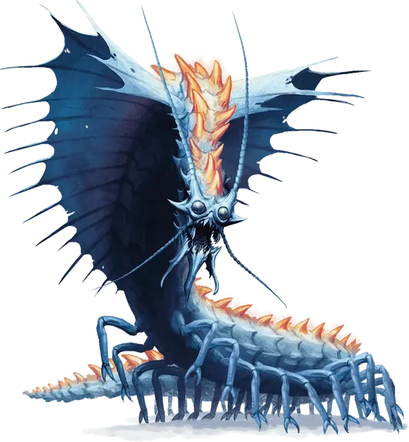

Ремораз
Remorhaz
Огромное Чудовище, без мировоззрения

Класс Защиты 17 Инициатива +5 (15)
Хиты 195 (17к12 + 85)
Скорость 40 футов, Копания 30 футов
| мод | спас | ||
|---|---|---|---|
| СИЛ | 24 | +7 | +7 |
| ЛОВ | 13 | +1 | +1 |
| ТЕЛ | 21 | +5 | +5 |
| мод | спас | ||
|---|---|---|---|
| ИНТ | 4 | −3 | −3 |
| МДР | 10 | +0 | +0 |
| ХАР | 5 | −3 | −3 |
Иммунитеты Огонь, Холод
Чувства пассивное Восприятие 10, Чувство вибрации 60 футов
Языки нет
Опасность 11 (7 200 опыта; БВ +4)
Особенности
Раскалённая аура. В конце каждого хода ремораза каждое существо в 5-футовой Эманации, исходящей от ремораза, получает 16 (3к10) урона Огнём.
Действия
Укус. Бросок рукопашной атаки: +11, досягаемость 10 фт. Попадание: 18 (2к10 + 7) Колющего урона плюс 14 (4к6) урона Огнём. Если цель — существо Большого размера или меньше, она становится Схваченной (Сл освобождения от захвата 17); пока длится захват, она также Опутана.
Бонусные действия
Проглатывание. Спасбросок Силы: Сл 19, одно Схваченное реморазом существо Большого размера или меньше (ремораз может держать проглоченными до двух существ одновременно). Провал: Цель становится проглоченной реморазом, а состояние Схваченный оканчивается. Проглоченное существо Ослеплено и Опутано, а также имеет Полное укрытие от атак и прочих эффектов, исходящих снаружи ремораза; кроме того, оно получает 10 (3к6) урона Кислотой плюс 10 (3к6) урона Огнём в начале каждого хода ремораза.
Если ремораз получает за один ход не менее 30 урона от проглоченного существа, в конце этого хода он должен совершить спасбросок Телосложения Сл 15; при провале он отрыгнёт всех проглоченных существ, которые падают Опрокинутыми в пространстве в пределах 5 футов от ремораза. Если ремораз умирает, проглоченное существо теряет состояние Опутанный и может освободиться из трупа, потратив 15 футов перемещения и оказываясь на выходе Опрокинутым.
Бонус мастерства +4
Среда обитания Арктика
Сокровища Отсутствуют
Реморазы
Раскалённые арктические многоножки
Реморазы — это похожие на гигантских многоножек кошмары, что прокапываются сквозь снег и лёд, подстерегая мелких существ, забредших в их ледяные владения.
Взрослые реморазы — неотступные засадные хищники. Они стараются ухватить жертву зубами, прижать к своему раскалённому телу, а затем проглотить целиком. Едят реморазы сколько влезет, ведь потом могут месяцами обходиться без пищи.